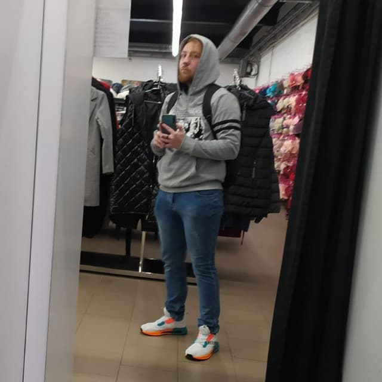

CV
About me
Name: Denis Sudnikov
Date: 22.03.2022
Country: Belarus
Education: College
Work experience: None
English level: Pre-Intermediate
Briefly story
In 2018, I entered college as a programmer technician. The main programming language was C#. The secondary programming language was HTML+CSS+JS. In March of last year (2021), I graduated but for some reason could not continue my studies or work in my specialty. In February 2022, I tried to go for an internship at Andersen, but did not qualify for reasons unknown to me. There is no real work experience and portfolio at the moment. I really want to become a real programmer and get into the team.
Code
System.out.println("input 2 numbers);
int a = scnr.nextInt();
int b = scnr.nextInt();
if (a > b) {
System.out.printf("Between %d and %d, maximum is %d %n", a, b, a);
} else {
System.out.printf("Between %d and %d, maximum number is %d %n", a, b, b);
}
int max = Math.max(a, b);
Projects
At the moment, only one
The list and the type of resume will be updated as you study :)
Skills
- HTML Basics
- CSS Basics
- JS Basics
- C# Basics
- XML Basics
- Access
Future
At the moment, I want to choose a specific path in which I will become a pro, and in the future to study, or at least try, all programming languages and possible combinations with other sciences. I want not just to write programs, but to create new ones and move progress forward. (Become the second Elon Musk ahahah)
Contacts
My contacts:
- Telefons:
- Belarus: +375(25)931-72-**
- Poland: +48 732-572-***
- Discord: boroDA#1924
- Email: d_sudnikov@mail.ru
- Telegram: @TapokBabki